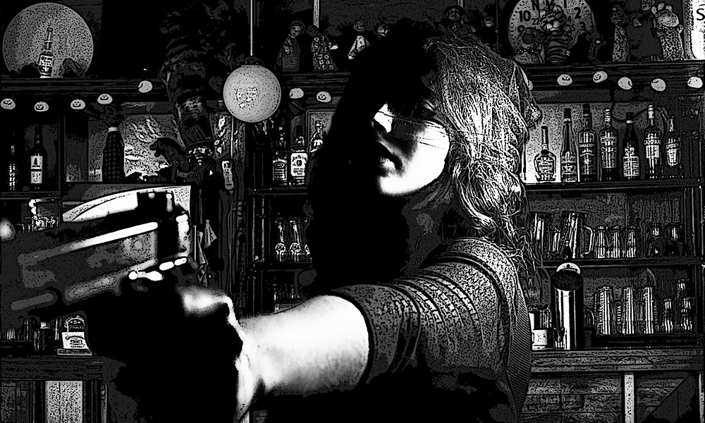

|

Behind My EyesMartin M. ClarkSo, I’m sitting in the Roundhouse Bar with Taco Murphy, not doing much of anything. Pretty much par for the course since the plant shut down, but it wasn’t like either of us had a wife and kids waiting at home. Well, this woman comes in - slim, brunette, way too classy for the Roundhouse - and stands for a moment, scoping the joint. Gets my attention, not just on general principle, but because she’s in a business suit, flat shoes, no purse. Not what you see around here, except on a cop or similar. But as I check her out, I swear, she kind of flickers. Then again, I got this metal plate in my head, from when Bobby Newmark rolled his old man’s Corvette, and I don’t always see things the same as other folks. No matter. Classy walks up to Henry, the barman. He’s standing, palms flat on the countertop, glum look on his face, like this has to be the Licencing Commission or somesuch. Taco, being Taco, slides along the bench to get a better view of her ass. The dickhead catches my elbow, makes me jab the bottle I’m holding against my teeth. I shove him away and we have words, so that I miss what was being said up at the bar. Miss my chance to run. “Get your head outta’ your goddam ass, we got company.” He looks at the approaching woman. Blinks. “What gives?” “Beats me. You got any outstanding warrants might have escaped your attention, dude?” Taco grunts. “Like I’m always the bad guy? You ain’t no angel, Frank.” Classy stops in front of our booth. She’s a looker, no argument: neat figure, laughter in her eyes, blood-red lipstick. But up-close there’s something about her – takes a moment to register – perfect bilateral symmetry (I dated a med student back-a-ways). She smiles. “And which of you fine gentlemen is Frank Booth?” Taco swallows a laugh and sits back, taking a long pull on his beer. I stand up, all polite, like. “That would be me, Miss.” I pull my baseball cap off, run a hand back across my close-cropped hair, and set my headgear firmly back in place. “We got business together? Because you sure don’t look familiar.” “I’m Clara Conner. Agent Clara Conner.” “Uh-huh. And which particular agency are you from? If you don’t mind me asking.” She reaches into an inside jacket pocket and removes a slim leather billfold. Again, just for a moment, it’s like bad reception on your TV. The shape of a woman is there, under the static, but featureless, like a storefront dummy. Her hair, skin, clothes - all just window dressing. I glance at Taco but he sure don’t see it, if his leer is anything to go by. Then this voice is in my head, the voice from my dreams, telling me to get the hell outta’ Dodge, as in right now. And sometimes you just gotta listen. I slap the billfold from her hand, send it spinning across the bar. Kick the table hard against her legs. She don’t flinch, gasp, or nothing - hand darts behind her, I figure reaching for a piece carried in the small of her back. Taco jumps up, switchblade in his hand like magic. The guy may be a shithead, but he’s always got my back. “Freeze!” Henry, holding the .38 he keeps behind the bar. “Nobody move.” God bless the predictable. Clara half-turns her head towards him, but keeps her eyes on mine. “Trust me, you don’t want any part of this.” Henry clears his throat, sounds dry. “My bar, my friends, my call. Frank here has a temper but I’ve never known him hit a woman. Everyone just calm down and we’ll do things peaceable, like.” Clara looks straight at me. “Oh, I think we’re way beyond that – don’t you, Frank?” I’ve worked door at the Consort Club and could tell it was gonna kick off, no matter what. I clench my fists. She smiles. The fire exit behind me opens as someone remembers someplace they have to be. The low afternoon sun streams in, lights her up like some religious icon. Her pupils don’t react. Clara spins round, towards Henry, and I see metal in her hand. I don’t know how anyone can move that fast. I hear her gun go ‘woof’. Henry, he explodes. All of him above the bar just blows apart, along with the bottles behind. Liquor spray bursts into flames. The bitch spins again, draws a bead on my chest. A shotgun roars. Takes half her face away. And then it’s whole again. Jonny Chen, short-order cook, standing in the kitchen doorway. He rak-raks another round in his 12-gauge. I grab Taco’s collar and bundle us both backwards over the bench. Because behind Jonny is the gas griddle, and still perfect Clara is already aiming at him. I hear her gun, then the Propane blast drowns everything else. That big old bench seat shoves us across the floor like leaves in the yard. Saves our asses. Taco drags me to my feet and through the fire exit. The alleyway leads to 2nd Street one way, Braun’s junkyard the other. We head for the wide-open. We stagger, we stumble, we run. And don’t look back. We run down 2nd Street, in the general direction of away. Sunday afternoon, so not many citizens about – and no cops. I hear this big whump of a secondary behind us, and a couple of other folks start running as well, so at least we’re not stand-outs. Make it as far as Rodriguez Hardware then have to stop, wheezing, legs done. Taco, he ain’t much better. Vacant lot beside the store, been empty so long it’s all overgrown. Couple of old hippies planted fruit bushes and put up a sign saying ‘Reclaimed Green’. Don’t think they figured on a ground crop of condoms and reefer butts. Well, maybe the reefer. We lay up there, off the street, trying to get our breath back. Taco jabs me in the chest. “You really done it this time, asshole.” I jab him straight back. “What, this is somehow all my fault?” “Well, let me think – you know of any other shitheads called ‘Frank Booth’ around here? Huh? And what kind of goddam gun goes ‘woof’, anyway? What the hell you got us into this time?” “Like I should know? Jesus. Anyway, don’t matter, I got a plan.” “You always got a plan, Frank, and they always suck.” He sniffs. “Try me.” I take a deep breath. “We get our shit together, load it in my truck. We blow town and never come back.” Pause. I hear Fire Department sirens getting closer. Taco stares at me. “Running away? That’s it?” “Damn straight.” Another pause. Drops of sweat ease down my back. He rubs his chin. “Why take your heap of shit Ford? My Toyota is way cooler.” “My heap of shit Ford don’t draw attention. We sell your pimped-out ride to Bobby Newmark for travelling money. He’s made an offer, what, two, three times?” “And suddenly I’m out a custom pickup? Jesus.” I hold my hands up. “Hey, no problem, dude. I’ll take off on my own while you stay here and play dumb. But if I’m in the wind then the law will come down hard on anyone they do have to hand, count on it. You want some chickenshit life with the cops busting your balls every other day, be my guest.” Another long stare. Taco spits in the dirt. “Shit.” Sighs. “Let’s get gone.” We head out back of the lot, past some sheds, moving parallel to Main Street. The town is just buildings around a crossroads and nowhere is really that far from anywhere else. My place is, was, set back-a-ways from the main drag. Nothing much but it suited me. No sign I had company, with just my truck standing in the back yard. I toss Taco the keys. “You gas her up while I pack. Then we’ll head over to yours.” “What am I, your personal ATM? Get real.” I fish out my wallet. “Thirty. All I got.” He takes the bills and gets behind the wheel as I go inside. I’m alone. He drives off while I start cramming clothes into a duffel. Not a lot else to show for my time here, apart from my ‘armory’. It’s a shoe box in the night stand and I tip the contents over the bed. Two guns. First is old-school – Remington .41 Derringer owned by some badass riverboat gambler. So my mom said, anyways. It goes in my jacket pocket as maybe worth pawning. Second is the real deal – Browning 9mm. Came from my grandfather, who was Shore Patrol in Korea and never fired a shot. Still works fine and I can hit a can right across the yard 7 from 10, when sober. “Put the gun down, Frank. It just complicates matters.” I recognise the voice but look anyway. Clara Conner. Standing in the doorway. Not a mark on her, I mean, not one. No burn marks on her clothes, nothing. She steps forward into the room and fear has her back. “How long did it take, Frank, to find someone with the same name? Someone suitable?” She smiles. “And I use the term advisedly. Does it make it easier when he shares your dreams? Or was it just an ego preservation technique? No matter. I have to admit, though, this is so far under the radar that Jung himself would have struggled to find you sooner.” I stand there without speaking. I thumb the safety catch ‘off’. “There’s no need to be coy, Frank, no need to hide any longer.” She steps up. I step back. “Listen, lady, I’m not who you think I am. I’m not this other ‘Frank Booth’ with a new face.” I pull a ‘kerchief from my jacket, wipe sweat from my face, cram it back inside. “I’m just me.” Her smile is a thin line. “Really? Well, you’re worth far more to us alive, but dead is acceptable. Now, I give you, the real you, one last chance to-” I twist and bring the Browning up. Clara moves so slick it’s like something we’ve practiced. Grabs the barrel and it ends up pointing at the ceiling, arm against arm. We’re real close. She stares into my eyes. Hers look like a dead shark I seen once. Gunshot. Make that a cannon. The kick almost breaks my wrist as I learn the goddam Derringer actually works. I step back but the Browning won’t follow. Can’t see for smoke and a cloud of jacket fibers. There’s a sound like fresh popcorn. I blink. Clara is a bald mannequin, naked apart from some Sam Browne harness getup with pouches. The eyes, nostrils, mouth are there, but the rest is featureless grey sheen. There’s a hole in her gut the size of my fist, surrounded by blue sparks and flickers. I figure the Derringer packed a custom load, designed to settle any argument. Slowly the dummy tilts backwards, then falls, lands on the carpet with a rigid thud. The hole in my jacket pocket is smoldering and I have to bat it out. Then the blue sparks from her turn white and I feel heat, even from 6 feet away. Time to grab my duffel and bail. I reach the kitchen with a foundry furnace at my back. I hear bedroom curtains burst into flame, the scree-scree of a smoke alarm. Charge out back and throw myself face-down in the dirt. The windows blow but glass and flames don’t find me. I roll over. The sun shines like this was a regular day, nothing special. I’m cool. Could have just lain there I suppose, even as the fire took hold, waited for Taco. Except not all my neighbors consider me a total asshole, and might come check. Didn’t need a whole bunch of questions, so I get up, lift the duffel, and start walking. Wipes his mouth. “That you, Frank, huh? Covering your tracks? Well, tell you straight up, I’m not torching my mom’s garage, no way.” Taco’s mom was now Mrs Garcia. Living above the garage sounds better than a grown man still at home, but he don’t pay no rent. One reason he’d had spare cash to spend so his ride. I grunt, toss the duffel in back. We get in, U-turn, and split. I sit back, take a breath. “That Clara bitch showed up. Had to shoot her.” Truck almost nosedives into the asphalt as Taco stomps on the brake. Pulls off his cap and starts beating me with it. “Goddam you, Frank, goddam you! Jesus Christ, she’s dead?” Not sure what to say that he’ll believe. Not sure I believe it myself. I bat him away. “Listen, just listen, dammit!” Taco stops, wipes his mouth. I set my shoulders. “She left me no option, no option. People she works for think I’m some other ‘Frank Booth’ with a new face. Even though I’ve lived here my whole damn life. No reasoning with her.” “That fire won’t hide a body. I seen it on TV, forensics. Oh, man, we are screwed.” “Just drive, will ya’. Trust me, we’re cool.” Taco glares at me. We take off. He sniffs. “So, you saying we’re not screwed?” “Something like Thermite went off after she died, burned her right up. This is one of them Black Ops deals, dude, zero evidence if things go south. I figure if we can duck out, it won’t be the cops that come looking.” “And that’s a good thing?” “What she said, took them long enough to latch on the first time. I figure if we keep moving, they got zero chance second time around.” Wipe my face. “Anyway, always said you wanted to travel.” He looks at me a long moment. Shakes his head, snorts, laughs. Laughs again. I join in, can’t help it. We hit the edge of town and he shifts up a gear. Pair of us barrel down the road like a pair of escaped lunatics. I stay with my truck when we reach the Garcia spread, while Taco runs back-and-forth with his gear. His Toyota is a ’93, with upright exhausts behind the cab, ‘Lone Star’ paint job, enough chrome to make the glare a hazard to navigation. He carries a double sleeping bag and candles in the big storage box, even rigged external speakers to play romantic music while making out. Guy is a primo skirt-chaser, and then some. Anyway, dickhead loads two bags plus a box of gadgets, leaves his mom a note. I guess the less she knows the better, if anyone comes asking. I see he’s cut-up about no face-to-face goodbye, but say squat. My folks are both gone and I got no family worth mentioning. We pull away in convoy, me eating his dust. Figure I owe him that at least. # The Newmark’s have this big place on the road to Bixby, ranchero style. Me and Taco did some odd jobs around the place, so know to take the side access marked ‘Deliveries’. We pull up round back and Consuela, the housekeeper, comes out. She gives us the eye. “You got some call to be around here, boys? Only I told you after last time, if we want the pool cleaned, we’ll use a professional.” Taco takes his cap off. “It’s Bobby we’re here to see, Miss Consuela. Private business.” Looks down her nose at us. “Mister Newmark Junior isn’t at home. I’ll let him know you called by.” Our plan is going south by the minute, but I saw a big Mercedes parked out front as we came in. I smile. “Then I figure Mister Newmark Senior is around? Maybe we could speak to him instead?” Bobby’s old man owns ‘Newmark Neu’, something high-tech. You see the ‘N2’ logo around, but they don’t employ no locals apart from catering and security. Despite that he’s a stand-up guy, always treats us fair. Consuela, well, she goes tight like I suggested a three-way, then nods and heads inside. Taco and me kick dirt for a couple of minutes before she reappears. “He’ll see you now. Far side, in the Rose Garden.” Taco grabs the documents from the glove box. We tip our caps, all smiles, and trail round. Maybe they had roses there once, but these days it’s a golf green, complete with flag. Old man Newmark is in polo shirt and chinos, practicing shots from 20 feet. “Afternoon, boys. Bobby isn’t here just now but I understand this is business, so maybe I can help?” Taco nods. “He’s made a few offers on my customized Toyota, Mister Newmark, and I’m minded to accept.” “Uh-huh, uh-huh.” Newmark points back towards town with his putter. “And this sudden change of heart wouldn’t have anything to do with that, I suppose?” Look over my shoulder at the column of smoke. “Straight-up coincidence, sir. No, we’re headed to Vegas and the truck is the only thing we got by way of steak money. Except up there they get that kind of thing all the time, so the offers will be shit. Makes more sense to sell here, where there’s a ready buyer. Now, given that Bobby ain’t around, I’m thinking cash sale with a one-week return. So, if your son don’t take to his new ride, he gets his money back when we return with our winnings” Newmark laughs. “I have to admire your confidence, Frank - been courting Lady Luck recently? Well, given how my day is turning out I’m inclined to agree she’s smiling on us, so what outrageous price are we talking here?” Taco rubs his chin. “He mentioned eight grand. I’ll take seven for a cash sale.” Another laugh. “You’ll take six and be thankful. Final offer.” Me and Taco exchange glances. I shrug. He nods. “We have a deal, sir. I have the pink slip with me, insurance, everything.” Newmark slots his putter into the golf bag. “Take a few minutes to enjoy the view. No offence, boys, but I’d prefer to access my safe in private.” “None taken, sir. We’ll wait right here.” We watch as he goes inside, then I turn on Taco. “Eight grand? Bobby only offered five, and he was drunk at the time.” “You’re complaining we’re walking away with more? And what exactly are you bringing to the table, Frank? Remind me?” “Apart from my charm and personality, you mean? Face it, dude, I’m the brains of this here outfit.” “Asshole.” “Shithead.” We grab each other, fall, tussle in the dirt. Hear a cough, stop, look up. Consuela stands there, pretty much the poster girl for Contempt. She carries two bottles of beer on a tray. Purses her lips. “Mister Newmark though you might appreciate some refreshment. He’s waiting for you in the study, but take your own sweet time, boys, I’m sure he’s got all day.” We get up, dust ourselves down, take the beer, mumble thanks. Taco shakes his documents clean and we follow her through the French windows. Inside is cool and airy, our boots echo on the tiled floor as we cross the hallway. Consuela knocks on the double doors and we go in. First thing I see is a big pile of cash money on the big oak desk. It looks like, like hope. Newmark is standing by the window, using his mobile. “–still here, yes. How long will… well, I’m sure they won’t mind a few minutes delay. Everything is relative, as they say. OK, see you soon.” He closes the phone and places it on the desk. Smiles. “Come in boys, make yourselves comfortable. And thank you, Consuela, that will be all. In fact, take the rest of the afternoon off. The family will be out this evening, so your services won’t be required.” She almost curtseys, closes the door behind her. Newmark pushes the pile of bills towards us, sits down behind his desk. “Six thousand dollars. Half in hundreds, the rest in ten’s and twenties. Sorry about the bulk, boys, but I’m sure you’ve brought along a bag to carry your winnings. Take a seat, Bobby will be along in a few minutes.” Not too keen on that, in case he nixes the sale, but can’t really refuse the man’s hospitality. We sit down, sip our beer. Newmark goes through the documents and Taco signs the bill of sale. We sip more beer, talk sports, time drags. Seems like an age, then I hear a car pull up out front. Maybe a minute or so and the study door opens. We look round. Clara Conner. Taco and me jump up but the Glock she holds gives us pause. I look at Clara, at Newmark. I lose it. “No way, no fucking way. I seen what she is, but she burned, burned everything around her.” Clara looks surprised, but not really. “Come now, Frank, it was you who designed us to operate in threes, after all.” “Jesus Christ, won’t anyone listen to me? I’m not this goddam Frank Booth you’re looking for! Ask around, ask anyone you want – I was born here, school, worked at Gibson Chemical, that’s it. Furthest I’ve been on vacation is Baton Rouge. I’m just a regular guy.” Taco half raises his hand. “We went to Miami that one time. Toby’s bachelor weekend.” I glare at him. “Unhelpful, dude.” “Just saying, is all.” “Enough!” Clara sounds like she’s trying not to laugh. “Well, my Frank Booth stole a fortune in Agency slush funds and left behind his corpse to dead-end the investigation. So, we were willing to entertain, ah, unconventional means to find him. Or at least that part of his consciousness being carried by a donor mind.” Newmark smiles. “That would be you, Frank, in case it’s not obvious.” “Like fuck it is.” “Newmark Neu are skip-tracers of the collective unconscious, the company interested parties turn to when all other avenues are closed. Because while a man can change his looks, his voice, his lifestyle, what he can’t control are his dreams.” And he pauses, like this is some big reveal. The room feels like a hit of bad Mescal with a side-order of Peyote. I taste salt sweat on my top lip. Face Clara. “You know this is total bullshit, right?” She shrugs. “Memories maketh the man, if you don’t mind the misquotation, and the man we need exists as a neural clone, biding his time.” Clara reaches inside her jacket, pulls out a billfold. “If it’s any consolation, Frank, this was always how it ends. The Agency discovered the visual trigger your namesake intended to use to wake up from being you somewhere down the line, so I’m merely pre-empting matters.” “Then let us run, like we planned. If I ain’t around then I can’t see any of that crap.” Clara smiles. “Nice try, but as one of me said, you’re worth a lot more to us alive–” “But dead is acceptable.” Newmark leans forward. “If this doesn’t work then I drop you myself, to make sure he never gets out.” I back up against the fireplace. “What I ever done to you, Mister Newmark?” Hard not to whine. “Bastard damn near killed my boy getting to you, and that can’t go unanswered.” I rub the side of my head, where the plate is. “The accident? But, but that was years ago.” Clara flicks the billfold open, facing down. “We’ve all been playing a long game, boys. But now it’s over.” Taco balls his fists, ready. But a bullet is way quicker. Then there’s pain in my head. Not like being punched, but inside, deep. Makes me cry out it’s so bad. And I hear a voice say, “No-one shall weep for Herod.” My voice. Clara drops the Glock and billfold. Stands straight, arms by her side, frozen. For a moment the rest of us follow suit. Newmark goes for the desk drawer. Taco goes for his switchblade. I drop to my knees, squeezing my head in both hands like that’s gonna help. Newmark hauls out a big-ass revolver. I see the flicker of steel as Taco flips his blade, catches it by the tip. Newmark aims, aims at me. Taco – arm back, throws. Gunshot. Marble flakes from the fireplace cut my face. Makes me turn away, eyes screwed shut. There’s no second shot. I look round. Taco’s knife is in Newmark’s throat, right to the hilt. Gurgling. Blood all down his shirtfront. He slumps back in his chair, gun lands on the carpet. Taco turns to Clara, fists up, but she stands there like nothing happened. The pain in my head is down to just the worst hangover ever. I stand up, feel sick. Room sways, but at least the floor don’t smack me in the face. Taco wipes his mouth. His hand shakes. Neither of us has killed before. “Christ, Frank, what just happened?” “They were bound to send the Furies after me, so I built in a pause function. Nothing as obvious as a kill switch, I knew they’d check for that. Same way I knew they’d use Newmark, so hiding out right under his nose made it all the sweeter.” My man looks at me, he looks at me hard. “Say what?” What it meant was gone, like a dream you can’t recall. I rub the back of my head. “Dude?” “Frank? That you?” “I guess.” I look round the room. “Shit.” “Yeah, big-time. Let’s grab the cash and bail.” I hold up a hand. “Wait, man, just gimmie a moment.” Look round the room, but seeing it this time. “Pull your knife, but wrap it in something so it don’t drip. Uh, use your cap.” Taco snorts. “Why mine?” “Cos mine is a signed Kyle Busch original, that’s why. Get to it, man, in case someone heard anything.” I stuff the pile of bills into the trash can liner. Taco’s switchblade and cap go in on top. He reaches for the bill of sale but I shake my head. “Leave it, dude. Anyone ever asks, we were here, concluded our business like gentlemen, and left.” “So I’m still out a pickup?” “Yeah, you’re still out a pickup, but when the cops start picking this over, it gives us a reason for being here that don’t involve murder. Now, you done your part so it’s time for me to step up.” I pick up the billfold and jam it in my back pocket, eyes closed. Pull out my singed ‘kerchief and lift the Glock. It sits heavy in my hand. Taco backs up almost to the door, eyes wide. I aim at Newmark, edge as close as I dare. Half look away, pull the trigger. Gunshot. Taco’s knife wound turns into a big hole. Bullet goes clean through Newmark’s neck into the oak chair back. More blood. I drop the gun by Clara. Sometimes all you can do is mess things up some, and hope. Take a breath, turn to face my man. “Marines, we are leaving.” Taco grins, but tight. “Finally, one of your goddam plans I can get behind, Frank.” “It’s the same plan, dickhead.” We bail. Just my truck waiting for us, hot in the afternoon sun. Bag of cash goes in back, under a tarp. Taco grabs his beat-up cowboy hat that makes him look like a stripper, but the dude won’t take a telling. We leave, me driving, and get as far as the Long Bridge before the shakes kick in. Other side is the county line, interstate, the wide world. I pull over, get out, go stand on the riverbank. Oil slick drifts past, like a rainbow someone pissed on. Sounds about right for my world. “Frank?” Taco behind me, close. “You OK?” I pull the billfold, tight closed. Rub my thumb over the leather. “This shithead, this Frank Booth, must have someone out there, with one of these, waiting his chance.” “If it works.” “But if it does, if someday it’s not me standing here, dude, you put him in the ground.” I look over my shoulder. “You do that for me, yeah?” Taco takes a long moment, then nods. “Consider it done.” I toss the billfold. It flutters, metal catches the sun, river catches it. I turn and look back at Gibson’s Reach, back at everything I’ve ever known. Sniff. “Fuck it.” I slap Taco’s shoulder and we get back in my truck. He sits, heels on the dash, hat forward to shade his eyes. “Drive until you run outta’ road, Frank, then I’ll spell ya’. Let’s put some miles between us and the past.” I grin. “Hell, yeah. We’re gentlemen of enterprise, dude. There ain’t nothing we can’t turn our hand to, down the line.” “Damn straight.” We pull away in a spray of gravel. State Troopers and the fire engine from Paradise Wells go past, but we’re nobody worth a second look. Shift up a gear and hit the gas. We’re gone… …and the world can kiss my ass. © Martin M. Clark 2020 All Rights Reserved |
||
|
Date of last update 1 Apr 2020 Portions of this site are copyrighted to third parties |
||